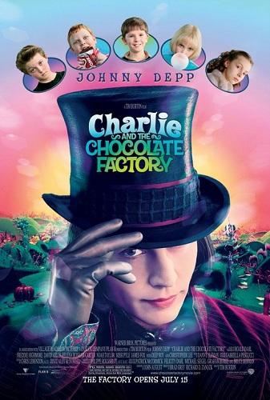
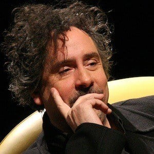

Willy Wonka (Johnny Depp) é o excêntrico dono da maior fábrica de doces do planeta, que decide realizar um concurso mundial para escolher um herdeiro para seu império. Cinco crianças de sorte, entre elas Charlie Bucket (Freddie Highmore), encontram um convite dourado em barras de chocolate Wonka e com isso ganham uma visita guiada pela lendária fábrica de chocolate, que não era visitada por ninguém há 15 anos. Encantado com as maravilhas da fábrica, Charlie fica cada vez mais fascinado com a visita.
22 de julho de 2005 (Brasil)
Timothy Walter Burton "Tim Burton".
